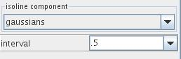
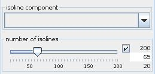
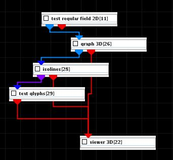
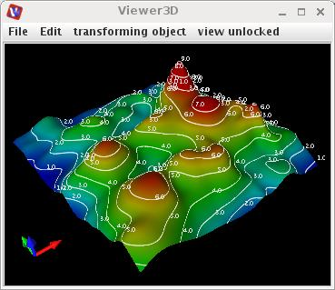

ISOLINES
The isolines module creates a series of contour lines of given constant values of a 2D field. The contour lines are colored by the level value. The selected component must be scalar.
Input data
The input is a regular or irregular 2D field.
Output data
The output field is an irregular field of isolines, a 2D geometry object and a 3D geometry object of the field.
Computation parameters

The isoline component drop down list defines the component for which isolines will be computed. For vector components the norm is used. By default the first component is choosen.
The interval drop down list allows to define the distance between isolines.
Presentation parameters
Presentation tab contents are described in the common interfaces section unter the Presentation Panel entry.
There are two parameters which are especially important for lines.

The line width slider allows to adjust the width of the isolines.
A drop down menu allows to choose between different line styles solid, dashed, dotted, dashdot. The default line style is solid.
Example

Choose test regular field 2D module from test objects library, graph 3D and isolines modules from 2D field mappers library and text glyphs from general mappers and accessories library and connect the modules.
In graph 3D module UI choose gaussians1 as graph and color component, choose an appropriate graph scale. In isolines module UI choose interval 1. In its GUI choose bicolor colormap and set the minimum value to white color. In text glyph module choose 2d fonts and an appropriate font size.
